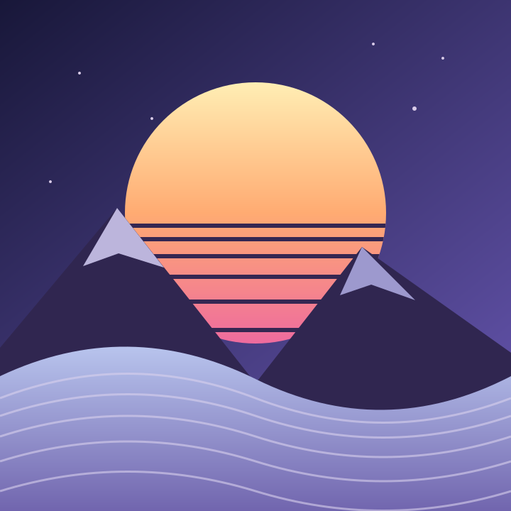

Interaction study / Three.js / image → points
Nothing staysscattered. A little landscape, held together by springs. Brush through the image to push its pixels into depth. Step away and watch every point find its way home.

Original artwork · loading particle renderer…
Field controls
A gentle disturbance. Brush radius 90 px
Push strength 1.8
SCATTER / RETURN RESET ARTWORK PAUSE MOTION
Mouse: sweep to push.
Reduced motion keeps a static image. No WebGL? The original artwork remains visible.
JavaScript is disabled. The original landscape above remains available.
01 / SAMPLE A local, original SVG becomes 14,400 colored points. No image requests to third-party services.
02 / DISTURB A circular brush repels nearby particles in x, y and depth. One Three.js Points draw call.
03 / RESTORE Fixed-step damped springs return to image coordinates. Rendering sleeps once the field settles.